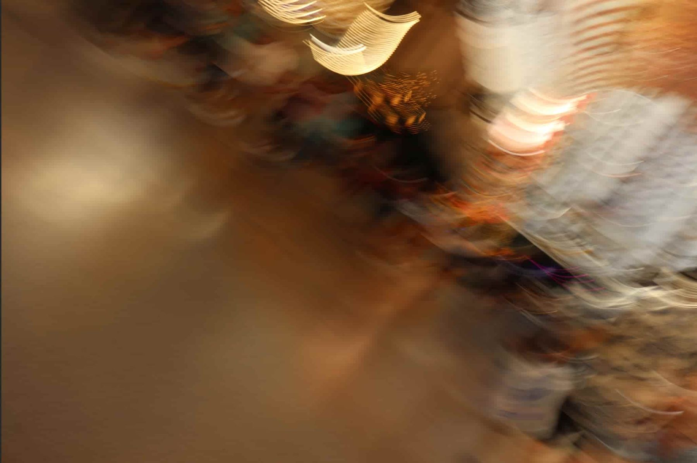
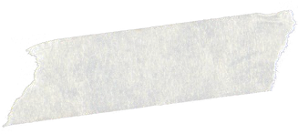
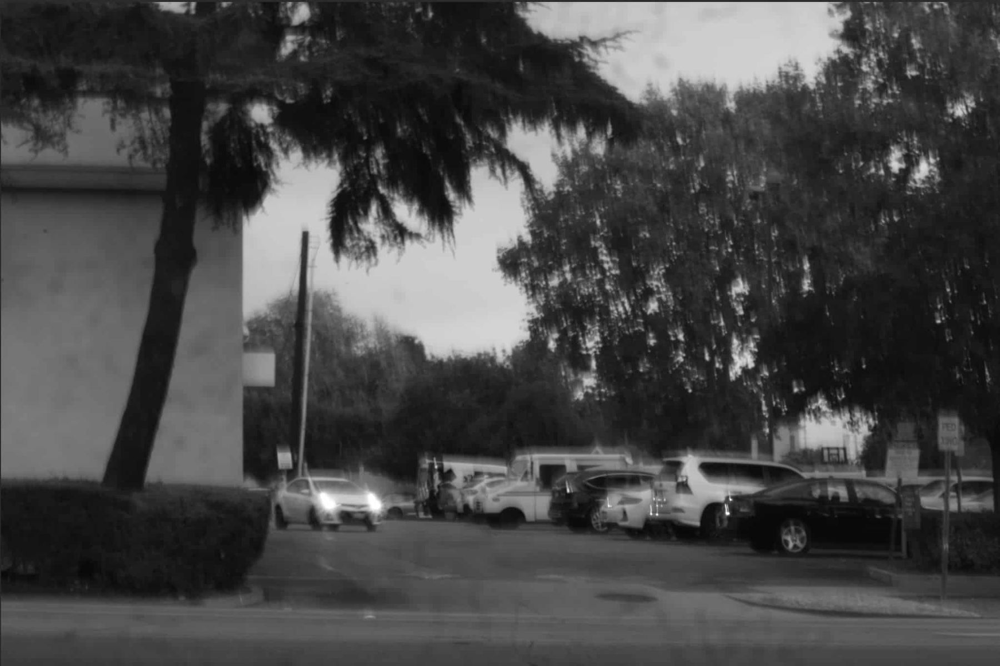

Hi I’m Thy. I’m currently a sophomore studying Finance & Business Analytics at Indiana University’s Kelley School of Business.
Alongside my interest in math & business, I’ve always had a thing for art! This portfolio documents my progress through various mediums: painting, design, photography, philosophy and literature.
My art style is loose and abstract, shaped by emotion, experimentation, and what I call the “Art of Noticing”: paying attention to small details and patterns, and to the feelings they stir. Later, you’ll see some of those feelings transpose themselves onto my canvas.
Alright enough words! I’m so glad you’re here, and I hope you enjoy looking around.
with love, Thy
Here are some of my drawings from 2021-2025. I do not have a specific topic to convey through my art. My work begins with emotion rather than a predetermined subject or message. I use expressive lines, abstract shapes, and bold color to create compositions that feel visually alive and satisfying to make.
My favorite artists are Wassily Kandinsky, Helen Frankenthaler, Frida Kahlo and Wangechi Mutu. I’m drawn to the way they each make art feel personal, whether through bold color and abstraction, intimate self-portraiture, or imaginative transformations of the human body.
First piece in my AP Art class. I attempt to explore the fragility of human nature within the vast natural world. The curled figure suggests a primitive, vulnerable core, surrounded by forms that evoke the beauty and force of nature. Through this contrast, I challenge the idea that human beings—especially through the growth of AI and technology—have conquered nature; instead, the painting suggests that we remain deeply connected to—and shaped by—the natural world.
This mixed-media piece, made with oil pastel, colored pencil, and crumpled craft paper, explores Metamorphosis.
The idea that beneath everything we build to set ourselves apart, humans are never far from the animals we came from. The figure isn’t fighting the change. Her eyes are closed, almost peaceful, as if she is surrendering to it. We tend to think of nature as something that exists to nurture us, something gentle that gives. I wanted to show the other side of that relationship. Nature is also patient, and eventually it takes back what it gave. In this piece, the transformation isn’t a punishment or a loss. It’s a return to where we started.
My exploration of The Metamorphosis led me to Kafka’s Gregor Samsa, and these portraits are my imagining of him.
Metamorphosis raises an uncomfortable question: if the human form can change so completely, what made us human to begin with? We see ourselves as separate from nature, but metamorphosis reveals that we are still bodies, still creatures, still subject to forces beyond our control. These pieces capture that moment when the line between human and nature stops holding.
Experiment with color pencils and self-portrait.
Free drawing with music. Tracks listened:
Bloodhail – Have a nice life (right)
Champion – Obito (left)

A distinct era of my art journey. Emphasis on expressionism & unrealistic figures.

Pasadena, CA. 2024
Longing in solitudeOld Towne Orange, CA.
There’s a melancholy feeling in seeing people lost in sun haze. The bright daylight and vast open space makes me feel entirely exposed, and strangely lonely.
It’s funny how grief and tragedy are often shown in the rain, when daylight can engender the same, at times—even a more intense feeling.
Dorm light.
Someone who appears often in my work is my father. I’ve found immense joy in taking candid photos of him. It was when he’s unguarded and at peace, and his thoughts evident on his expressions.
Somehow, photographing him feels like it heals something in our relationship. It lets me see him not only through the old, sometimes rigid image I had of my father, but as a more authentic and vivid person.
All images are Thy’s personal works